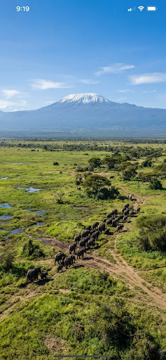
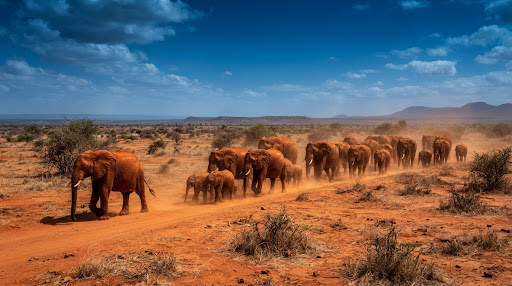

Best for Big Five
Maasai Mara National Reserve
Predators, migration, open plains, and classic safari drama.
View SafarisExplore Kenya
A map-inspired guide to safari country, mountain escapes, and coastal holidays across Kenya.
Route thinking
Kamondon Safaris helps connect Nairobi, parks, reserves, hotels, lodges, beach towns, and transport into one clean itinerary.
Request destination adviceFeatured places
Predators, migration, open plains, and classic safari drama.
View Safaris

Vast landscapes, red elephants, volcanic views, and rugged routes.
View Safaris
Rhinos, flamingos, lake scenery, and easy Rift Valley access.
View Safaris
Northern landscapes, rare species, riverine wildlife, and quiet camps.
View Safaris
White sand, warm Indian Ocean water, resorts, and excursions.
Request Hotel OptionsMore Kenya options
Great for short stays and arrival day wildlife.
Cycling, gorges, and active day trips near Naivasha.
Forest, waterfalls, cool highland air, and lodge stays.
Adventure, mountain scenery, and lodge retreats.
Conservation, rhinos, and Laikipia wildlife.
Marine parks, beaches, and relaxed coastal hotels.
Beach resorts, heritage, and easy transport connections.
Heritage, dhow trips, and quiet island charm.